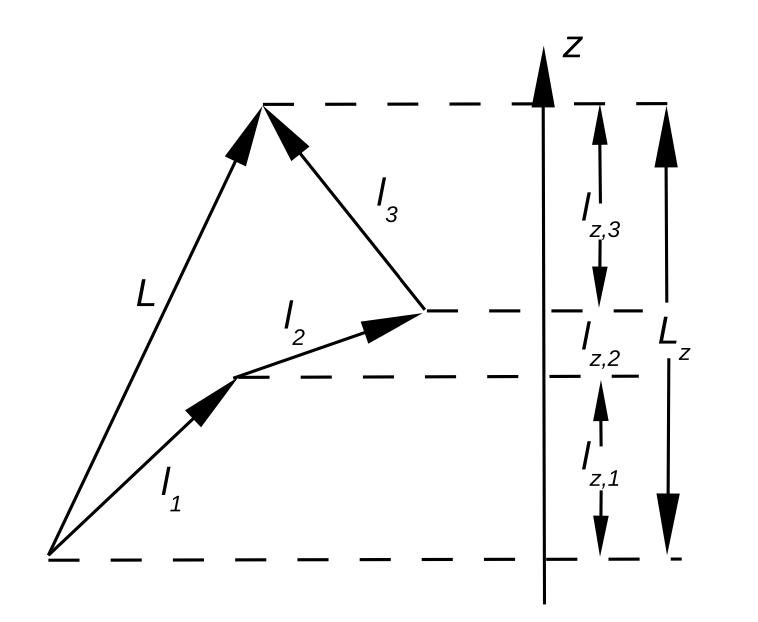
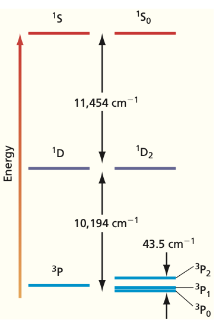
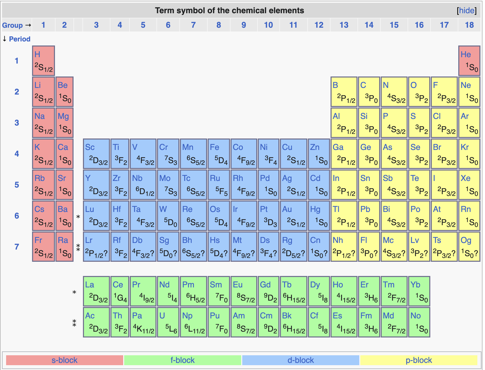
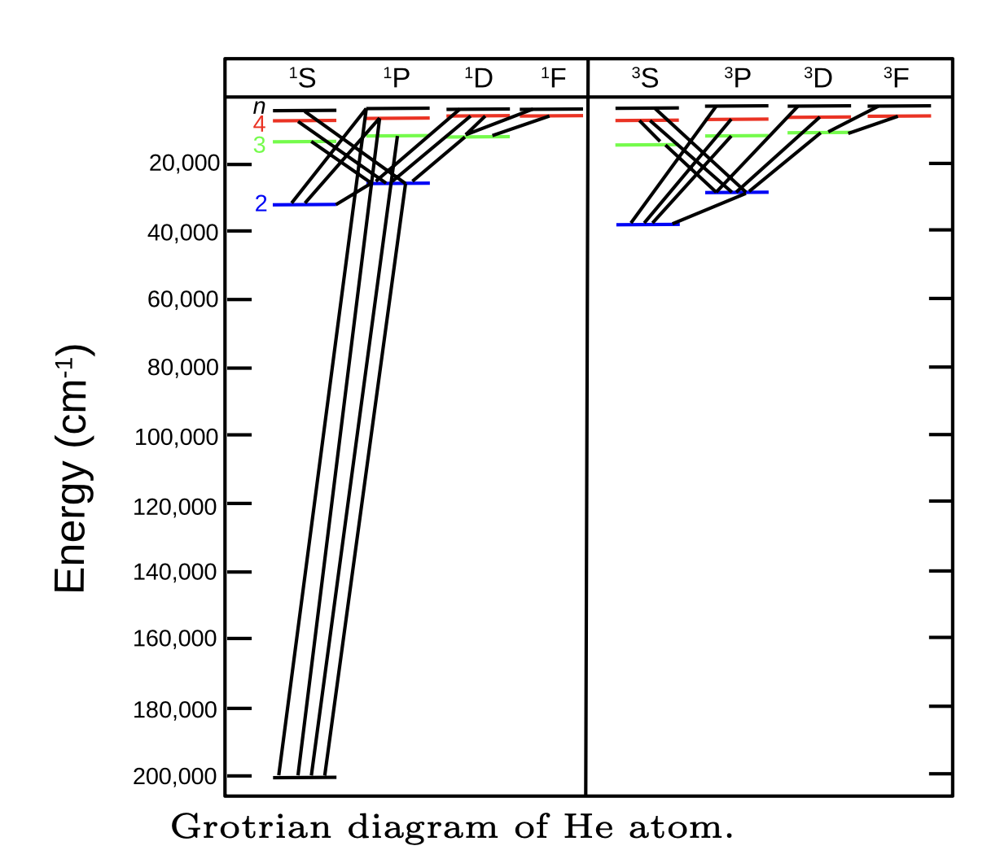

Chem 3240 · Lecture 7.4

\[\hat{L} = \sum_{i=1}^{N} \hat{l}_i, \qquad M_L = \sum_{i=1}^{N} m_i\]
\[L = l_1 + l_2,\; l_1 + l_2 - 1,\; \ldots,\; |l_1 - l_2|\]
\[S = s_1 + s_2,\; s_1 + s_2 - 1,\; \ldots,\; |s_1 - s_2|\]
\[J = L + S,\; L + S - 1,\; \ldots,\; |L - S|\] \[M_J = M_L + M_S\]
\[^{2S+1}L_J\]


\[\hat{H}_{SO} = A\,\vec{\hat{L}}\cdot\vec{\hat{S}}\]
\[\vec{\hat{L}}\cdot\vec{\hat{S}} = \tfrac{1}{2}\left[J(J+1)-L(L+1)-S(S+1)\right]\]

Couple the electron momenta as vectors to get \(L\), \(S\), and \(J\), pack them into a term symbol \(^{2S+1}L_J\), and let Hund’s rules pick the ground state. Spin-orbit coupling splits terms into levels, and selection rules decide which transitions you actually see.
Chem 3240 · Quantum Mechanics